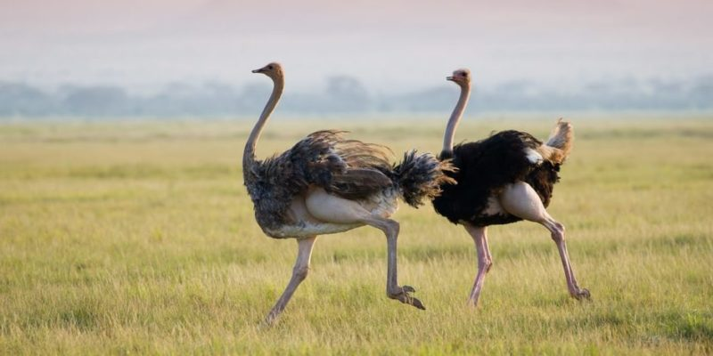

los animales terrestres
Los animales terrestres son animales que viven predominante o totalmente en la tierra,
a diferencia de los animales acuáticos, que viven predominante o totalmente en el agua
o los anfibios, que dependen de la combinación de hábitats terrestres y acuáticos.
